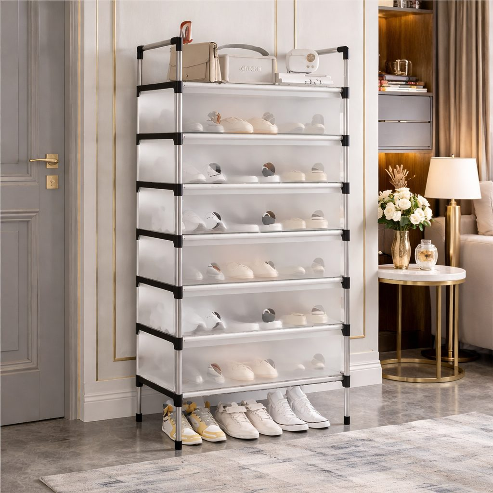
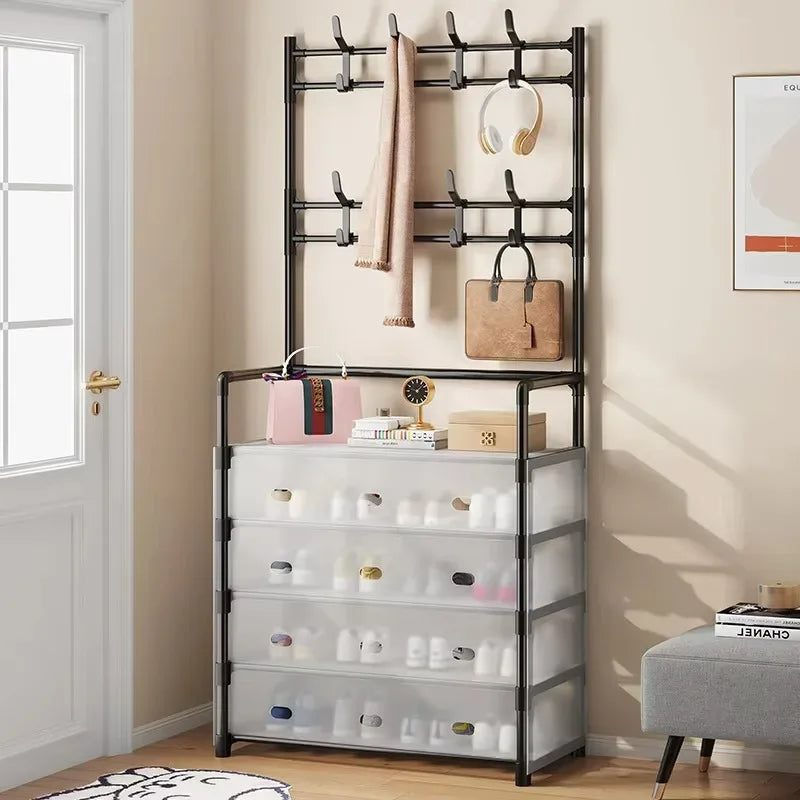

- Count your shoes honestly
- Open racks versus closed cabinets
- Making the most of small spaces
- Placement and hygiene
- A system for the family
- Dealing with smells
- Style at the entrance
- Shoes for every season
- Weddings and guests
- Caring for festive footwear
- Choose your rack
In many Pakistani homes, shoes are removed before entering, for cleanliness and because prayer is offered at home. The result is familiar: a heap of chappals, school shoes, joggers and khussas piled outside the door or in the corridor. When guests arrive, the pile doubles. Apart from looking messy, shoes scattered at the entrance are a trip hazard and spread dust. A good shoe rack brings order to this daily chaos.
Count your shoes honestly
Before buying a rack, count the pairs that live near the door. A family of five can easily have twenty or more pairs in daily use, plus guest slippers. Add a few spaces for visitors. This tells you how many tiers you need. It is better to choose a rack slightly larger than you think, because shoes tend to multiply, especially with growing children.
Open racks versus closed cabinets
Open racks are light, affordable and let shoes air out, which helps with smells. They are ideal for a covered porch or a corridor. Closed shoe cabinets or dustproof racks with fabric covers keep dust off shoes, look neater, and hide the clutter when guests arrive. In dusty cities like Lahore, Multan and Quetta, a dustproof design saves cleaning shoes before going out. Racks with fabric drawers are a good middle ground.

Making the most of small spaces
In flats and narrow entrances, space is tight:
- Tall, slim racks with many tiers use vertical space instead of floor area
- Combined shoe and coat racks hold shoes below and jackets, bags and keys above
- Racks with a seating bench let elders sit down while putting on shoes
- Foldable racks can be moved when needed for extra guests
Measure the depth of your corridor so the rack does not block the path or door swing.
Placement and hygiene
Place the rack just inside or outside the main door, depending on your space and security. If it is outside, choose a rust-resistant material and a cover to protect from rain and dust. Keep a mat in front so feet land on a clean surface. Place a small basket or tray at the bottom for wet or muddy shoes during the monsoon. Wipe the rack every week and air it out regularly.
A system for the family
Assign each person a shelf or section. Children's school shoes can go on the lowest tier where they can reach easily, with socks tucked inside. Formal shoes and festive khussas used only for weddings can be stored in boxes elsewhere, keeping the rack for daily pairs. Keep a few pairs of clean house slippers for guests on a dedicated tier.

Dealing with smells
Shoes in a closed space can smell, especially in hot weather. Let shoes air for a few minutes before putting them away. Sprinkle a little baking soda inside trainers overnight and shake out in the morning. Place a few dried neem leaves or a sachet of activated charcoal in the cabinet. Wash canvas shoes regularly.
Style at the entrance
The entrance is the first thing guests see. Choose a rack that matches your decor, such as bamboo for a warm natural look or black metal for a modern home. Add a mirror above, a small plant or a wall key holder nearby, and the entrance becomes welcoming rather than cluttered.
Shoes for every season
Rotate shoes with the seasons. In winter, move sandals and chappals into storage and bring out closed shoes and boots. In summer, do the opposite. This keeps the rack manageable.
Weddings and guests
During wedding functions or large family gatherings, shoes can number in the dozens. Keep a large foldable rack or a few baskets ready for guests, and place them clearly near the door so shoes do not spread across the porch.
Caring for festive footwear
Khussas, embellished sandals and formal heels are worn only a few times a year, often at weddings, so they deserve gentle storage. Wipe them clean after each function, stuff them with tissue paper to hold their shape, and keep them in individual cloth bags or boxes away from damp. Store them on the top shelf of a closed cabinet so dust and sunlight do not dull the embroidery.
Choose your rack
Browse dustproof shoe cabinets, multi-layer racks and shoe-and-coat stands in the Trenducts shoe racks collection, or explore the rest of the store at https://www.trenducts.pk/. Delivery is available all over Pakistan.